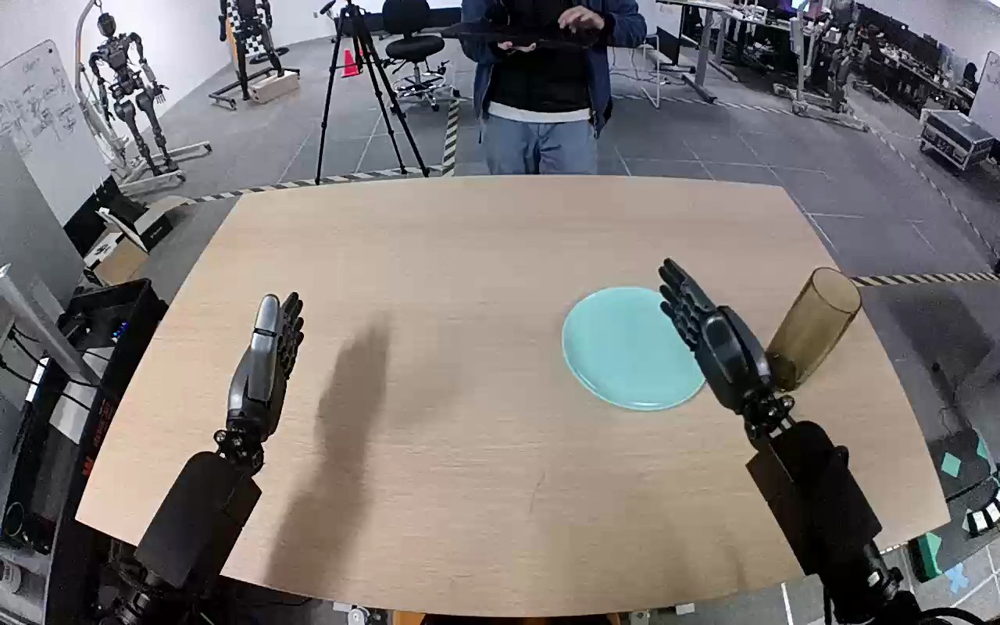

NVIDIA GR1 · 69
Video 69

Visual review action_review.json
{
"prompt_protocol": "humanoid_action_v1",
"prompt_provenance": "visually_authored_from_video_and_initial_frame",
"reviewed_contact_sheets": [
"sheet_001.jpg"
],
"inspected_frame_stride": 2,
"inspected_sampled_frame_count": 60,
"initial_scene": "Two robot forearms face forward over a tan tabletop. A single tall translucent tinted cylindrical drinking glass stands to the right of a turquoise plate. Both hands initially are open; a person beyond the table does not interact with the glass or robot.",
"observed_sequence": [
{
"start_frame": 0,
"end_frame": 57,
"action": "The right arm raises and moves outward toward the glass, presenting its open palm beside the glass; the left hand remains open and stationary to the opposite side.",
"confidence": "high"
},
{
"start_frame": 58,
"end_frame": 77,
"action": "The right hand closes its fingers around the far/right side of the glass with its thumb opposed on the nearer/left side, while the glass remains at its original table position.",
"confidence": "high"
},
{
"start_frame": 78,
"end_frame": 88,
"action": "The right arm lifts the glass clear of the tabletop with a maintained finger-and-thumb grasp, keeping its open end above its base.",
"confidence": "high"
},
{
"start_frame": 89,
"end_frame": 101,
"action": "The right arm carries the raised glass inward and leftward in the image until its base is over the turquoise plate.",
"confidence": "high"
},
{
"start_frame": 102,
"end_frame": 113,
"action": "The right hand lowers the glass onto the plate while retaining its grasp. The left arm stays out of the manipulation.",
"confidence": "high"
},
{
"start_frame": 114,
"end_frame": 119,
"action": "The right fingers and thumb open and the hand begins rising away; the glass remains upright with its base inside the plate.",
"confidence": "high"
}
],
"arm_hand_roles": {
"right": "Sole manipulating hand: approaches, encloses the glass with articulated fingers and opposed thumb, lifts, carries, lowers, and releases it on the plate.",
"left": "Remains open and essentially stationary throughout; no object contact, stabilization, or transfer."
},
"anatomical_side_evidence": {
"convention": "Camera looks forward along the two forearms from the robot side of the tabletop, with arm roots toward the lower image and fingers pointing away. The image-right forearm is therefore the robot-relative right arm, unlike a frontal view of the robot.",
"visible_evidence": "Both lower forearm/arm connections enter from the corresponding sides below the near table edge; opposed thumbs face toward the inter-arm space in the initial view and during the grasp. The manipulating hand on image right has its thumb inward, supporting the right-hand assignment.",
"confidence": "high",
"limitation": "The torso and shoulders are outside the camera view; naming is supported by the forward forearm orientation and thumb anatomy, and agrees with the source annotation."
},
"coordination": "Single-hand manipulation; no hand-to-hand transfer and no interaction with the person beyond the table.",
"terminal_state": "The tall glass stands upright with its base on the turquoise plate. The right hand is open and rising above/to the right of the glass after release; the left hand remains idle.",
"uncertainties": [],
"annotation_discrepancies": [
"The annotation calls the glass grey; visually it is translucent with an olive/smoky tint. The usable prompt calls it tinted rather than asserting a neutral grey color. The annotated hand, object transport, and destination agree with the visible motion."
],
"evidence_frame_indices": [
0,
50,
70,
84,
98,
112,
119
],
"selected_execution_status": "success",
"inspection_coverage": {
"contact_sheet_frame_interval": [
0,
118
],
"sampled_frames": "Every second decoded frame, 0 through 118 inclusive.",
"native_resolution": [
1280,
800
],
"source_initial_png_viewed": true,
"native_transition_and_terminal_frames_viewed": [
50,
70,
84,
98,
112,
119
],
"complete_original_sequence_retained": true
},
"video_id": "69",
"dataset": "NVIDIA_GR1_100",
"dedicated_review_agent": "review_gr1_69",
"review_source_video": "NVIDIA_GR1_100/69/original/original.mp4",
"source_frame_count": 120,
"source_fps": 20.0,
"native_detail_frames": [
50,
70,
84,
98,
112,
119
],
"world_model_prompt": "The robot closes its right fingers and thumb around the tall tinted glass on the right side of the table and lifts it upright. It carries the glass over the turquoise plate, lowers it onto the plate, then opens its fingers and raises the hand away, leaving the glass standing on the plate. Keep the camera fixed; preserve robot geometry, physically valid joint motion, and normal gripper opening and closing.",
"original_task_instruction": "Use the right hand to pick up tall grey glass from right of tan table to turquoise plate.",
"selected_segment": {
"start_frame": 0,
"end_frame_exclusive": 120,
"reason": "Complete original single-task reference; no cropping or trimming requested."
},
"source_video_sha256": "13e225a6dd35d8262d8e50f19982ca7c6eb9fbd96c9c3d842b4c3e3666a2c80b",
"review_completed_at": "2026-10-13T18:26:01.418975+00:00"
}